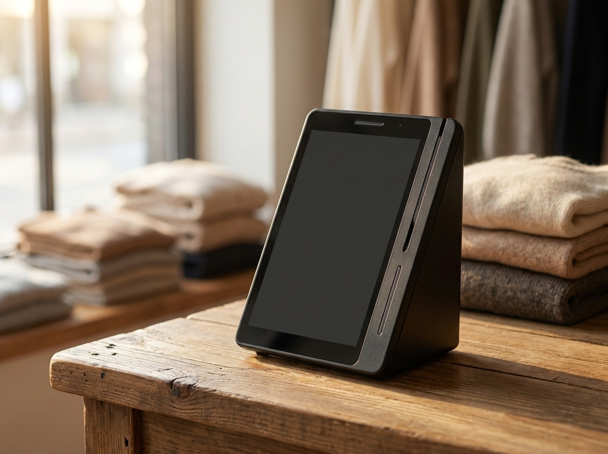

카드 결제 취소와 환불, 매장에서 밟아야 할 순서 (매입 전 취소와 매입 후 취소는 다릅니다)
결론부터 말씀드리면, 카드 결제 취소는 돈을 새로 돌려주는 일이 아니라 결제가 왔던 길을 그대로 되짚는 일입니다. 그래서 현금처럼 그 자리에서 손님 손에 쥐어 드릴 수 없고, 카드로 받았으면 카드로, 간편결제로 받았으면 그 결제 수단으로 되돌아가는 것이 원칙입니다(카드가 해지된 경우 등 예외 상황은 해당 카드사 안내를 따르셔야 합니다). 매장에서 할 일은 단말기에서 원래의 결제 건을 찾아 취소를 진행하고, 그 사실을 손님에게 정확히 설명하고, 기록으로 남기는 것까지입니다. 누리네트웍스는 수도권 매장을 직접 방문해 설치하고 관리하는 포스·결제단말 전문 업체입니다. 특히 옷가게처럼 교환과 환불이 잦은 업종에서 취소 처리 문의를 많이 받습니다. 이 글에서는 매장에서 취소를 어떤 순서로 처리해야 하는지, 그리고 손님에게 어떻게 설명해야 오해가 생기지 않는지를 정리했습니다.
환불은 돈을 돌려주는 일이 아니라, 온 길을 되짚는 일입니다
동네 옷가게 계산대에서 취소가 필요한 순간은 대체로 두 가지입니다. 하나는 사장님 실수입니다. 금액을 한 자리 더 눌렀거나, 할인 전 가격으로 결제했거나, 같은 건을 두 번 승인한 경우입니다. 다른 하나는 손님 요청입니다. 사이즈가 맞지 않아 교환하러 왔는데 바꿀 물건이 없어 환불로 정리하는 경우, 선물용으로 샀다가 되돌리는 경우가 여기에 해당합니다.
두 상황 모두 처리 원칙은 같습니다. 결제가 지나온 경로를 거꾸로 밟는 것입니다. 카드 결제는 손님 카드에서 매장으로 돈이 바로 건너오는 구조가 아닙니다. 카드사, 결제망, 매입사를 거쳐 단계적으로 정산되는 흐름입니다. 취소도 처음 경로를 따라 거슬러 올라가야 하므로, 매장에서 취소 버튼을 눌렀다고 해서 그 즉시 손님 통장에 돈이 꽂히는 것이 아닙니다.
여기서 대부분의 다툼이 생깁니다. 사장님은 분명히 취소를 눌렀고, 손님은 며칠이 지나도 돈이 안 들어왔다고 합니다. 둘 다 맞는 말입니다. 취소는 정상적으로 처리됐고, 그 결과가 손님 명세서에 반영되는 시점이 다를 뿐입니다. 그래서 취소를 잘 누르는 것만큼 잘 설명하는 것이 중요합니다.
한 가지 미리 짚어 두겠습니다. 취소·환불 처리 기준과 반영까지 걸리는 기간은 카드사와 결제 서비스 정책에 따라 다르게 운영됩니다. 이 글에서 며칠이라고 단정하지 않는 이유가 그것입니다. 실제 건은 해당 카드사 고객센터나 이용 중인 결제 서비스의 공식 안내를 확인하시길 권합니다.
당일 취소와 며칠 뒤 취소가 명세서에 다르게 보이는 이유
같은 취소인데도 손님 명세서에 보이는 모습이 다른 것은, 그 결제가 매입 단계로 넘어갔느냐 아니냐에 따라 처리 방식이 갈리기 때문입니다.
결제가 일어나면 먼저 승인이 떨어집니다. 이 단계는 아직 실제 돈이 오간 것이 아니라 "이 금액을 쓰겠다"는 확인에 가깝습니다. 이후 매장의 매출 자료가 매입사로 넘어가면서 실제 청구가 확정됩니다. 취소를 언제 하느냐가 갈리는 지점이 바로 이 매입입니다.
| 구분 | 어느 시점의 취소인가 | 손님 명세서에 보이는 모습 |
|---|---|---|
| 승인 취소 | 매입으로 넘어가기 전 취소 | 결제 내역 자체가 지워지듯 정리되는 경우가 많음 |
| 매입 후 취소 | 매입이 진행된 뒤 취소 | 결제와 취소가 각각 한 줄씩 남는 경우가 많음 |
| 부분 취소 | 일부 금액만 되돌림 | 원 결제 옆에 취소 금액이 따로 표시 |
| 간편결제 건 | 결제 수단을 따라 되돌아감 | 카드·충전금 등 결제한 그 수단으로 반영 |
이 표를 손님 응대의 언어로 옮기면 이렇게 됩니다. 결제한 그날 매입으로 넘어가기 전에 되돌리면 명세서에 흔적이 거의 남지 않는 경우가 많습니다. 다만 매입이 넘어가는 시점은 카드사와 결제 환경에 따라 다르므로, 당일이라고 항상 그런 것은 아닙니다. 반대로 지난주에 산 옷을 오늘 환불하면 결제 한 줄, 취소 한 줄이 나란히 남습니다. 손님이 "결제가 아직 그대로 있는데요"라고 하실 때, 이 구조를 알고 있으면 당황하지 않고 설명할 수 있습니다.
부분 취소도 마찬가지입니다. 두 벌을 샀는데 한 벌만 되돌리는 상황이라면 전체를 취소하고 다시 결제하는 대신 일부 금액만 취소하는 방법이 있습니다. 다만 부분 취소가 가능한지, 어떤 조건에서 되는지는 단말기와 카드사 정책에 따라 달라지므로, 매장에서 자주 쓰실 계획이라면 미리 확인해 두시는 편이 좋습니다.

계산대에서 이 순서대로 처리하세요
취소는 순서만 지키면 어렵지 않습니다. 다만 순서를 건너뛰면 이중 취소나 금액 착오가 생깁니다.
첫째, 원래의 결제 건을 먼저 찾습니다. 영수증, 승인번호, 결제 일시 가운데 하나만 있어도 됩니다. 옷가게라면 손님이 영수증을 챙겨 오지 않는 경우가 많으니, 결제 일시와 카드 뒷자리로 찾을 수 있게 매출 내역을 확인하는 습관이 도움이 됩니다.
둘째, 결제 수단을 확인합니다. 카드로 받았는지, 간편결제로 받았는지에 따라 되돌아가는 경로가 다릅니다. 간편결제로 받은 건은 현금으로 돌려 드리는 것이 아니라 그 결제 수단을 따라 되돌아갑니다. 여기서 임의로 현금을 내드리면 매출 기록과 실제 현금이 어긋나기 시작합니다.
셋째, 전체 취소인지 부분 취소인지 정합니다. 교환으로 처리할지 환불로 처리할지도 이 단계에서 확정해야 나중에 번복이 없습니다.
넷째, 취소를 진행하고 결과를 확인합니다. 취소가 정상 처리됐는지 화면에서 확인하고, 취소 영수증이 필요하면 함께 드립니다.
다섯째, 설명합니다. "지금 취소했습니다"에서 끝내지 말고 "취소는 방금 처리했고, 손님 명세서에 반영되는 시점은 카드사 쪽 일정에 따릅니다"까지 말씀드리는 것이 좋습니다. 며칠이라고 숫자를 못 박지 않는 편이 오히려 안전합니다.
취소 건일수록 기록에 남아야 합니다
가장 위험한 습관은 취소 건을 없던 일로 취급하는 것입니다. 취소는 매출이 사라지는 일이 아니라 매출과 취소가 짝을 이뤄 남는 일입니다. 이 짝이 맞아야 하루 마감이 맞고, 카드사 정산 금액과 매장 장부가 어긋나지 않습니다.
교환과 환불이 잦은 옷가게라면 더 그렇습니다. 하루에 몇 건씩 취소가 오가는데 기록이 흐릿하면, 월말에 카드 입금액과 매장 매출이 왜 다른지 거슬러 확인할 방법이 없습니다. 결제와 취소가 한 곳에 나란히 쌓여 있어야 나중에 확인이 되고, 손님이 다시 찾아왔을 때 설명할 근거도 생깁니다.
여기에 잘 맞는 선택이 네이버단말기입니다. 결제와 취소 내역이 한 흐름으로 쌓이고, 네이버 플레이스·예약과 연결해 쓸 수 있어 검색으로 찾아온 손님이 방문하고 결제까지 하는 흐름을 하나로 이어 둘 수 있습니다. 연동 범위는 업종·가입 조건에 따라 다를 수 있어 상담 시 안내해 드립니다. 네이버페이 적립과 결제도 함께 받을 수 있습니다. 카드와 여러 간편결제를 가볍게 한 대로 받고 싶으시다면 토스단말기도 함께 놓고 비교해 보실 만합니다. 누리네트웍스는 정품 신제품 보증과 수도권 직영 설치·관리를 원칙으로 하며, 매장 구성과 비용은 상황에 따라 달라지므로 상담 시 안내해 드립니다.
세금 신고 쪽도 같은 맥락입니다. 취소된 건이 매출에 그대로 남아 있으면 실제보다 매출이 부풀려 잡힐 수 있습니다. 다만 부가세와 세무 처리 기준은 상황에 따라 다르고 바뀔 수 있으니, 국세청 홈택스 등 공식기관에서 최신 기준을 확인하시거나 담당 세무 대리인과 상의하시길 권합니다.
자주 묻는 질문(FAQ)
Q. 금액을 잘못 눌렀는데, 바로 취소하고 다시 결제해도 되나요?
일반적으로 가능합니다. 발견 즉시 취소하는 편이 깔끔합니다. 매입으로 넘어가기 전이라면 손님 명세서에 흔적이 거의 남지 않는 경우가 많기 때문입니다. 다만 취소를 확인하기 전에 다시 결제하면 두 건이 동시에 잡힐 수 있으니, 취소가 정상 처리된 것을 확인한 뒤 재결제하시는 순서를 지켜 주세요.
Q. 손님이 며칠 지나서 환불하러 왔는데, 처리 방법이 다른가요?
매장에서 하는 조작 자체는 크게 다르지 않습니다. 다만 이미 매입이 진행된 뒤라면 결제와 취소가 명세서에 각각 남는 형태가 됩니다. 손님께는 "결제 줄이 지워지는 게 아니라 취소 줄이 따로 붙는다"고 미리 말씀드리면 오해가 줄어듭니다.
Q. 환불한 돈은 며칠 만에 손님 통장으로 들어가나요?
날짜를 단정해 말씀드리기 어렵습니다. 카드사와 결제 수단, 매입 진행 상황에 따라 달라지기 때문입니다. 취소·환불 처리 기준과 소요 기간은 카드사·결제 서비스 정책에 따라 다르므로, 정확한 건은 해당 카드사 고객센터나 이용 중인 결제 서비스의 공식 안내를 확인하시길 권합니다.
Q. 간편결제로 받은 건을 현금으로 돌려 드려도 되나요?
권하지 않습니다. 결제 수단을 따라 되돌리는 것이 원칙이고, 현금으로 대신 드리면 매출 기록과 실제 현금이 어긋나 정산에서 문제가 생깁니다. 손님이 급하다고 하셔도, 원래 경로로 되돌아간다는 점을 설명해 드리는 편이 서로에게 안전합니다.
취소까지 매끄러워야 다시 오는 매장이 됩니다
손님은 잘 산 순간보다 되돌릴 때의 응대를 더 오래 기억합니다. 환불을 요청하러 온 손님에게 우물쭈물하지 않고 순서대로 처리하고 명확히 설명해 드리면, 그 매장은 믿을 만한 곳으로 남습니다. 그러려면 결제와 취소가 한 곳에 기록으로 쌓이는 환경이 먼저입니다. 어떤 업종에서 어떤 방식으로 결제를 받고 계신지 말씀해 주시면 매장에 맞는 구성을 함께 찾아 드리겠습니다. 수도권은 직접 방문해 설치하고 관리해 드리니 부담 없이 문의 주세요.
- 📞 전화상담 1544-7754
- 🌐 홈페이지 https://nwpos.co.kr

📷 인스타그램 팔로우 https://www.instagram.com/nurinetworkspos

▶️ 유튜브 구독 https://www.youtube.com/@nurinetworks